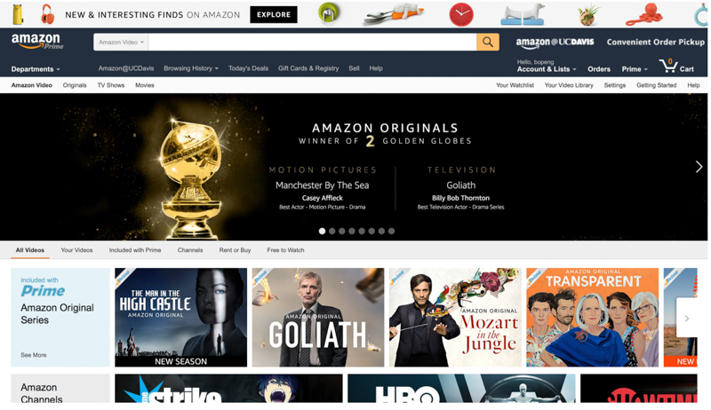

Jan 11

CONTENT TAILORED TO THE CURRENT USER
Once they have established the website’s product search and online shopping capabilities, users will most likely want to take advantage of those features right away—starting with search.
Amazon uses cookies to keep a user logged in, and that user’s shopping habits are tracked and stored server-side.
This is a good enhancement, because it dynamically customizes the user’s experience based on prior searches, page views, wish-list additions, written reviews and, ultimately, purchases.